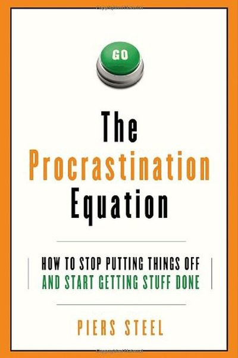

Library › Productivity
The Procrastination Equation — Summary & Key Lessons

How to stop putting things off and start getting stuff done — the science of why we delay, from the world's leading researcher.
📖 OPEN THE FULL INTERACTIVE BREAKDOWN →🌐 Read it in Hindi, Hinglish, Gujarati, Tamil & 22 more languages — free, with audio.
💡 The Big Idea
Piers Steel — who analyzed over 700 studies on procrastination — boiled the science into one equation: Motivation = (Expectancy × Value) / (Impulsiveness × Delay). You procrastinate when you doubt success (low expectancy), the task feels worthless (low value), you're impulsive, or the reward is far away. The cure isn't character — it's engineering: boost expectancy and value, and shrink impulsiveness and delay. Procrastination is a solvable equation, not a personality flaw.
🧠 The 5 Key Lessons
Lesson 1: The Equation: Motivation = E×V ÷ I×D
The Equation
Steel's master formula: Motivation = (Expectancy × Value) ÷ (Impulsiveness × Delay). Expectancy is your belief you can succeed; Value is how much you want the outcome; Impulsiveness is how easily you're distracted; Delay is how far the payoff is. To beat procrastination, you don't need more willpower — you need to fix the variables: raise E and V, lower I and D.
📖 Example: A task you doubt you can do (low E) that you hate (low V), while your phone distracts you (high I) and the reward is months away (high D) — that's a formula for guaranteed delay. Change any variable and the motivation moves. Read the full example →
⚡ Do this: For your most-procrastinated task, score E, V, I, D from 1–10. Pick the weakest variable and design ONE fix for it this week.
Lesson 2: Raise Expectancy: Small Wins Build Belief
Expectancy
People avoid tasks they believe they'll fail. The cure is engineering wins: break the task into steps small enough to succeed at, borrow confidence from past wins ('I did this before'), and model others who've done it. Each small success raises expectancy for the next — which is why starting tiny isn't a trick, it's a math move.
📖 Example: Steel's research shows students with high expectancy on a course procrastinate far less — and expectancy is built, not born: previous course performance, chunked goals and self-talk ('I can learn this') all measurably raise it. Read the full example →
⚡ Do this: Break your task into a step you're 95% sure you can do today. Do it. Note your expectancy for tomorrow's step — it will be higher.
Lesson 3: Raise Value: Make It Matter (and Make It Fun)
Value
Value has two parts: how important the outcome is to you, and how enjoyable the task is. You can raise both: connect the task to your deepest goals ('this report funds my freedom'), add challenge or novelty, and pair the task with something you love (music, a nice café, a podcast you save only for this).
📖 Example: Steel's data: people who reframed tasks as games or challenges — 'beat my best time,' 'turn it into a streak' — raised their value scores and their completion rates. Temptation bundling (work + treat) is value engineering. Read the full example →
⚡ Do this: Write one line connecting your task to something you deeply want. Then add one enjoyable element to the task itself (playlist, café, timer-game).
Lesson 4: Shrink Impulsiveness: Design the Distraction Out
Impulsiveness
Impulsiveness is the strongest predictor of procrastination — but it's also the most fixable. Steel's advice is environmental: remove the cues (phone in another room, no open tabs), use commitment devices (apps that block, deadlines that cost money), and train self-control like a muscle with small daily reps. Your environment is your destiny.
📖 Example: Steel cites studies where students who studied without their phones in the room outperformed those with phones on the desk — even on silent — by a full letter grade. The mere presence of the distraction lowered focus. Read the full example →
⚡ Do this: For one week, put your phone in another room during deep work. Track your focus. Then add one more environmental fix.
Lesson 5: Shrink Delay: Bring the Future Closer
Delay
Humans are wired to prefer now over later — the future self is a stranger we don't care about. The fix: shrink the delay between effort and reward. Set artificial deadlines (public ones work best), front-load the rewards (celebrate milestones immediately), and use 'precommitment' — deciding in advance what you'll do, so the moment of temptation has no decision to make.
📖 Example: Steel's research: people with self-imposed deadlines do better than open-ended ones — and public deadlines work even better because the social cost of failing is immediate. A deadline 2 weeks out on your calendar beats 'someday' every time. Read the full example →
⚡ Do this: Give your task a public deadline this week (tell someone). Reward yourself the moment you hit each milestone — same day, not 'eventually.'
✅ 5-Step Action Plan
- Score E, V, I, D for your worst task; fix the weakest variable.
- Engineer one tiny win today to raise expectancy.
- Connect the task to a deep goal; add one enjoyable element.
- Design the distraction out — phone in another room for a week.
- Set a public deadline and reward milestones immediately.
💬 Best Quotes from The Procrastination Equation
- “Procrastination is the voluntary delay of an intended and necessary and/or personally important activity, despite knowing you'll be worse off for the delay.”
- “If you want to know where your heart lies, look at where your mind wanders.”
- “Self-control is the ability to override one impulse in favor of another — and it's trainable.”
Interactive version: mark lessons as read, listen in your language, share quote cards.